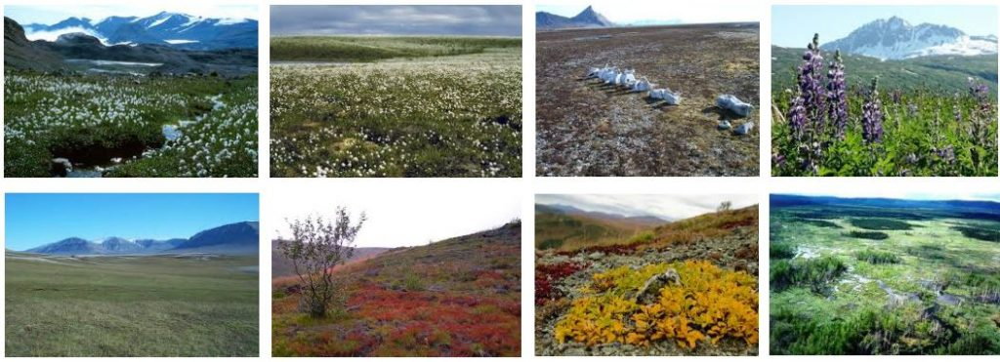
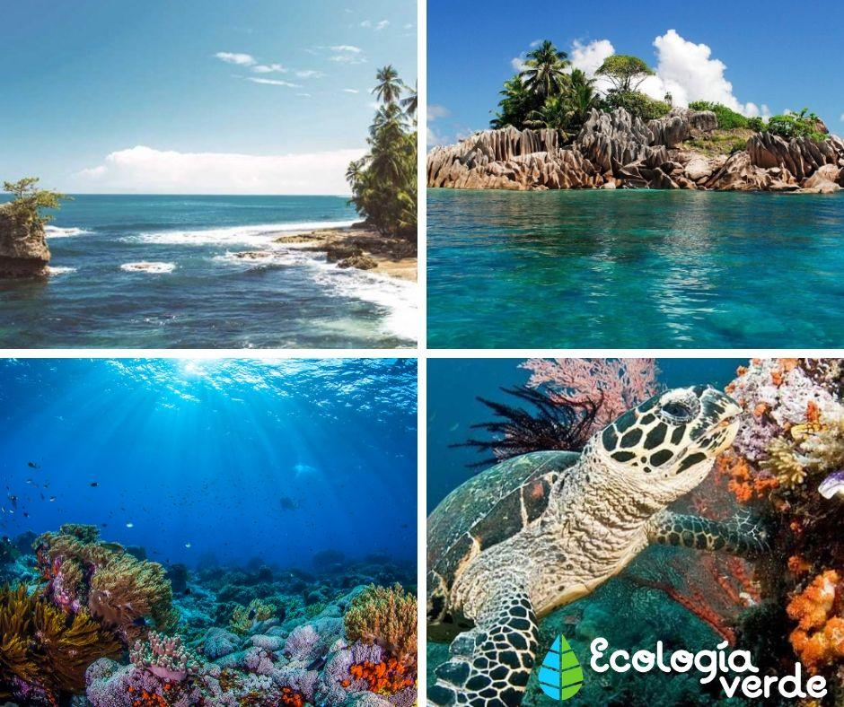

| BIOMAS | PRADERA | SABANA |
|---|---|---|
| PRINCIPALES BIOMAS EN EL MUNDO | El bioma de la pradera se encuentra en parajes con lluvia de 300 a 1500 mm por año, cifra insuficiente para el sustento de un bosque, y superior a la normal en un desierto verdadero. Algunas praderas se han desertificado por la acción del hombre. Se encuentra terreno de prado en el interior de los continentes y son bien conocidas las praderas del occidente de Estados Unidos y las de Argentina, Uruguay y parte de la región sur del Brasil, Australia, Rusia meridional y Siberia. El suelo de las praderas es muy rico en capas por virtud del rápido crecimiento y descomposición de los vegetales, y muy apropiado para el crecimiento de plantas alimenticias como trigo y maíz. | Las sabanas son praderas tropicales con una pequeña cantidad de árboles o arbustos dispersos. Se desenvuelven en regiones de alta temperatura, que tienen marcada diferencia entre las estaciones seca y húmeda. En la estación húmeda el crecimiento de las plantas es rápido, pero éstas se secan y bajan en calidad durante la estación seca. Las sabanas tropicales cubren áreas extensas en América del Sur, África, India, Sudeste Asiático y Australia Septentrion. |
Factor climático |
El bioma está caracterizado fundamentalmente por el clima. Fue de hecho la distribución zonal de los climas lo que llevó a poner de relieve la zonificación de las tierras a finales del siglo XIX, y después, los biomas. Los parámetros físicos particularmente involucrados son temperatura y las precipitaciones. A su vez la temperatura está determinada especialmente con la latitud y la altitud. | |
| BIOMAS ACUÁTICOS | Biomas duceacuícolas. Son básicamente son dos; los de aguas corrientes (lóticas) de ríos y arroyos, y hilos de aguas quietas (lénticas) de lagos y lagunas. | Existe dos tipos principales y que se diferencian principalmente por la profundidad que alcanzan las aguas y la distancia a la costa: Biomas marinos litoral o nerítico y Biomas marinos oceánico o pelágico. |
¿Qué son? |
Aquella unidad (zona o región) que divide la biosfera, donde existe una relación de factores geológicos y climáticos que determinará en gran medida el tipo de fauna y vegetación. Como definición genérica de una forma más clara podríamos decir que es una determinada parte del planeta que comparte el clima, flora y fauna. | |
El chaparral es también conocido como bosque mediterráneo. En las regiones del mundo de clima dócil, con lluvias relativamente abundantes en invierno pero con veranos muy secos, la comunidad culminante incluye árboles y arbustos de hojas gruesas y duras. Este tipo de vegetación se llama "xerófila". Durante los veranos secos y calurosos es constante el peligro de fuego que puede invadir rápidamente los lomeríos del chaparral. Las comunidades de chaparral son muy extensas en California y costa noroccidental de México, a lo largo del Mediterráneo, en Chile y a lo largo de la costa sur de Australia.La diversidad del chaparral, un medio ambiente bastante uniforme, soporta relativamente pocas especies, pero muchas de sus plantas producen bayas comestibles y dan vida a vasta poblaciones de insectos y lo que el chaparral pierde en diversidad lo gana en número de individuos. Algunos vertebrados residentes característicos son los pequeños, ratas del bosque, ardillas listadas, lagartos y otros. Un ave característica del chaparral es el chochín herrerillo (Chamaea fasciata), una especie callada cuya área coincide casi exactamente con los límites del chaparral. En el Mediterráneo, aunque la diversidad animal residente no es grande, la de aves migratorias es muy grande ya que esta región queda a mitad del camino entre los trópicos y las zonas más templadas. Durante el verano, la población de aves es menor, encontrándose solamente algunas aves tropicales, adaptadas al hábitat arbustivo y a condiciones de aridez. Llegan al Mediterráneo en primavera para nidificar, abandonándolo antes del comienzo del invierno. Entre los visitantes invernales, predominan las paseriformes (tales como las currucas y zorzales) y los patos.